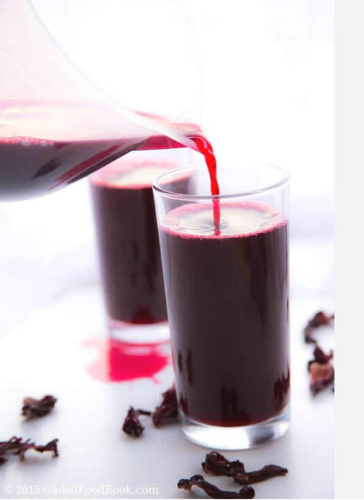

WELCOME TO HAMMYS EXCEPTIONAL
What is Sobolo
Sobolo is a hibiscus drink made from Hibscus/Roselle petals, not to be confused with hibiscus tea.
The hibiscus used for this drink is said to be indigenous to West and East Africa. Different cultures make this drink very differently. Even in West Africa there is quite some regional diversity. I have seen Zobo that is made with cloves, pineapple (peel and fruit), ginger and cloves. In Ghana, we pack in the spices ( I mean this is nothing new because we Ghanaians love heat). Our sobolo can include ginger, pineaple (peel, fruit and leaves from the crown), ginger, cloves, dried chilis (yes you heard that right), black peppercorn, grains of paradise (gives a kick), grains of selim and calabash nutmeg. Yes it is a lot but it makes it very distinct. I have seen other variations of what I have detailed in different West African countries, and I have seen recipes that are as simple as the hibiscus petals, steeped in hot water with sugar and maybe oranges. Every person adds their own flair to it
What you will need to make sobolo
As you have seen from the description of this drink, there is a lot of variations. I find that the Ghanaian version has a lot of ingredients, many of which add a nice taste, but can always be switched around or removed. Its all about what you have available and what you like.
- Hibiscus/ Sorrel Flowers: This red flower is the most important part of the recipe. It is full of colour and has a sour flavour. You can find it at many Caribbean and African stores. NOTE: hibiscus tea you get in tea bag are not going to work. These are completely different from the sorrel.
- Added Fruit: Traditionally, pineapple (the fruit and skins) are used to add sweetness and extra antioxidants, but feel free to use oranges,lemon or any fruit of choice
- Spices: Ghanaian sobolo tends to use a lot of spices compared to our other West African counterparts. The spices serve not only as flavour but also a ton of medicinal properties. These spices include grains of Selim, grains of paradise, African bird eye chilli and many more.

- Sweetner: I tend to use sugar for my drink since hibiscus can be sour, but to cut down on sugar, I include a handful of medjool dates. They are incredibly sweet but with added fibre and nutrients, they are actually a good source of sugar and also ,you can use Honey as your sweetner

Medicinal Properties
- Pineapple peels are known to be high in bromelain, a protein digesting enzyme that is great in improving digestion
- Pineapple as a fruit is high in vitamin C, which is a key factor in immune cell function
- Grains of Selim have been used to ease sore throat, at least my mum forces me to chew it when I have a cold, but I do not know if there are any scientific facts out there.
- Ginger is celebrated for its anti-inflammatory process and aid in digestion
- Spices are also medicinal: cloves have been touted to support liver health
After reading of all the benefits, I was really thinking, so now I can have my cake and eat it too. Its tasty and great for me. Sign me up>

How to make Sobolo
- Clean: You will need to clean the pineapple by soaking a vinegar and water solution to make sure it is clean. Fill up the sink with water and add a few splashes of vinegar
- Prep Ingredients: This is where the most work is done. Peel off the skin, pluck a few of the leaves from the crown and chop up the pineapple fruit into cubes. Peel the ginger and grind or blend with cloves
- Blend: Blend the pineapple, ginger and cloves till smooth
- Boil Drink In a large pot, combine all the ingredient in water and let it come to a boil. Once it has boiled, add the hibiscus leaves and let is steep at a rolling boil for 30 minutes
- Cool After the 30 minutes, turn off the heat, add your sugar or honey to taste (adding in bits till desired sweetness) and let the drink completely cool
- Strain Once the drink has completely cooled, you will need to strain out the liquid with a fine mesh strainer. Use clean hands and do not be afraid to get your hands in there and squeeze out the liquid from the fruits sitting in the drink.
This drink really only requires some chopping here and there, it really is something that can be made while multitasking and can be done right before sleep and left overnight to cool.
Sobolo
Spiced Ghanaian Hibiscus Drink
Servings:Family gathering
INGREDIENTS
- 1 bowl of hibiscus leaves
- 5 tsps of cloves
- Ginger
- 2teaspoon of star anise(optional)
- 4 pineapple(peels and juice)is used
- Slice of lemon and orange(optional)
- Pineapple and Strawberry essence(optional)
- Sugar or Honey
PREPARATION
- In a pot,pour 10cups of bisap leaves and add water to fill more than half of the pot
- Peel the pineappleIn a pot,pour 10cu and add the peels to the pot
- Blend the cloves,pinneaple and ginger and pour it in the pot
- Add 2teaspoon full of star anise into the pot
- Put the sliced lemon and orange into the pot and allow it to boil for 20-25 minutes and strain
- Give it a second strain with a mesh strainer and allow it to cool
- Add pineapple and strawberry essence
- Add Honey or Sugar(add in bit and taste) to make sure I am getting the right sweetness
- Best served chilled
- Enjoy
THINGS YOU SHOULD KNOW
One thing about hibiscus drink is you can choose how you want it to taste like by the type of ingredients you add.Whether you want it spicy or fruity.Some other ingredients that blend very well with hibiscus tea are Mint,star anise,cinnamon,black pepper,apple,lemon grass etc.You can add meatpie,fishpie,doughnut or buns along side the hibiscus drink when served chill.For health wise, serve warm with Honey
You have the free will to explore all the ingredients mentioned.Drinking (1-2)cups of hibiscus tea or drink is considered very safe.It helps in lowering blood pressure,supporting liver health and for my chubby ladies who wants to loose weight, it promotes weight loss.

Read More